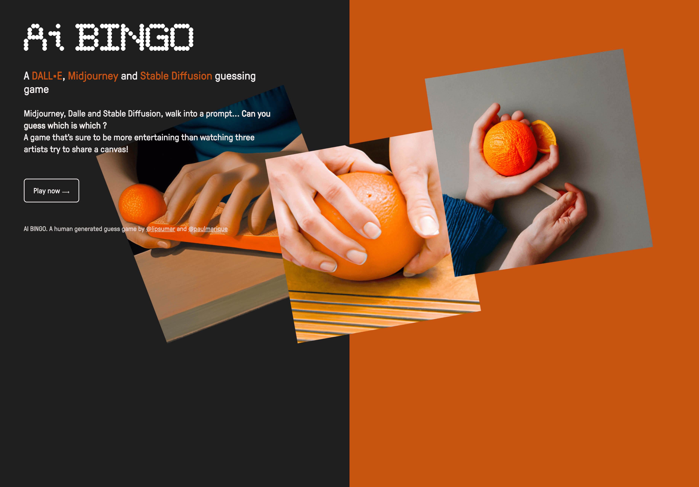
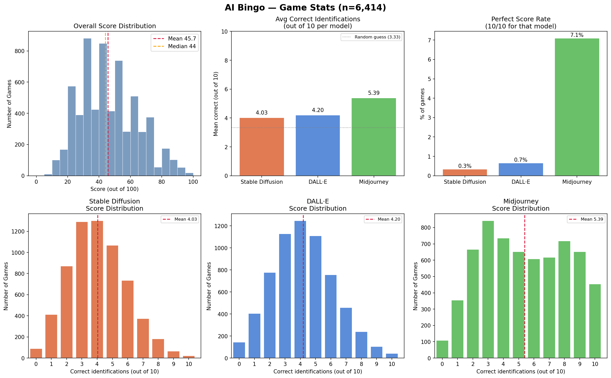

In 2023, as generative AI was taking off, everyone had opinions about which model was best — and I read a lot of beliefs that "model X always does Y." I wondered how well people could actually tell them apart. So I built AI Bingo: players are shown 3 images per round across 10 rounds, and must match each image to its generator — Midjourney, DALL·E, or Stable Diffusion.
The game collected 6,414 plays. The results were more interesting than I expected:
The game got traction on the Midjourney subreddit, which likely skewed the sample toward users already familiar with that model's aesthetic. This is not a proper scientific experiment — but the data holds up as a fun snapshot of how recognizable these early models actually were.

(Collected over an unknown time window — I forgot I was tracking data and, inexplicably, didn't add timestamps to the records.)